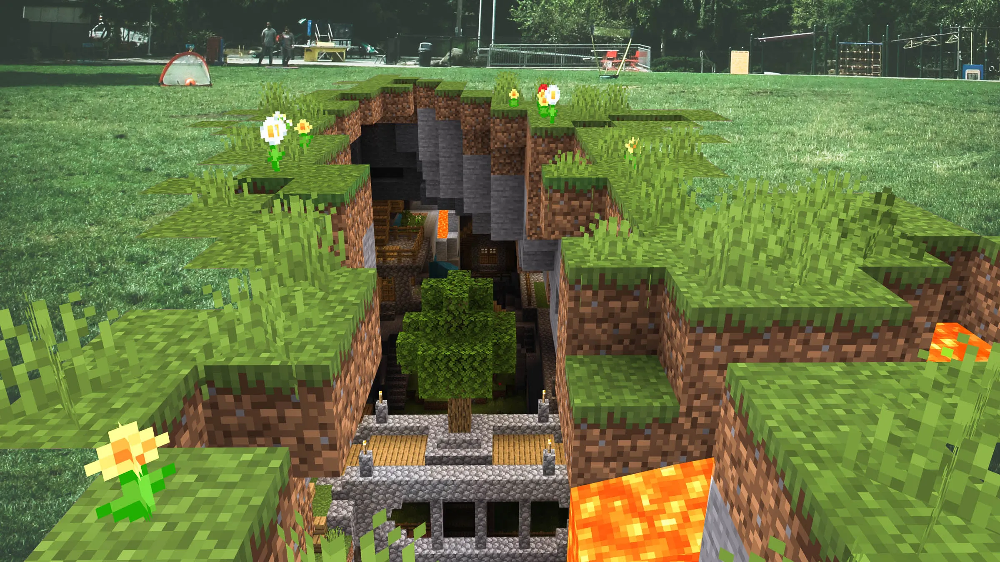

Minecraft – це 3D-пісочниця,
Minecraft – це 3D-пісочниця,
розроблена компанією Mojang Studios,дегравецьвзаємодіє з
ігровим світом через розміщення та руйнування
різнихблоківу трьох різних вимірах. Різноманітнийігровий
процесдозволяєгравцям самим вибирати шляхи
проходження гри, відкриваючи численні можливості.
Minecraft має чотири підтримувані
видання: Java Edition , Bedrock Edition , Education
Editionі China Edition .
Перед початком гри слід вибрати параметри для процедурної генерації світу. Гравець може ввести в спеціальному полі початкове значення («зерно») для генератора псевдовипадкових чисел , що дозволяє створювати унікальні світи або залишити його порожнім. У такому випадку гра зробить це автоматично, використовуючи для початкового значення час на системному годиннику . Два світи, створені з тим самим «зерном», будуть однакові. Далі гравець може налаштувати ігрові правила і вибрати тип світу: наприклад, «суперплоский» ( англ. Superflat ) або «розширений» ( англ. Amplified ), з величезними горами. За умовчанням створюється світ з безліччю різних біомів щодо невеликого розміру, але гравець може вибрати тип світу з біомами, збільшеними у 16 разів.
Ігровий світ складається з розставлених у фіксованому порядку кубів (блоків) і практично не має обмежень у просторі. У Minecraft немає будь-яких конкретних цілей чи сюжету – все будується на тому, щоб гравець імпровізував під час гри. Загалом гра будується на добуванні та розміщенні блоків, що розрізняються між собою текстурою, фізикою та іншими ознаками, і створенні предметів з інгредієнтів. Можливість споруджувати різні конструкції робить Minecraft схожою з конструктором Lego.